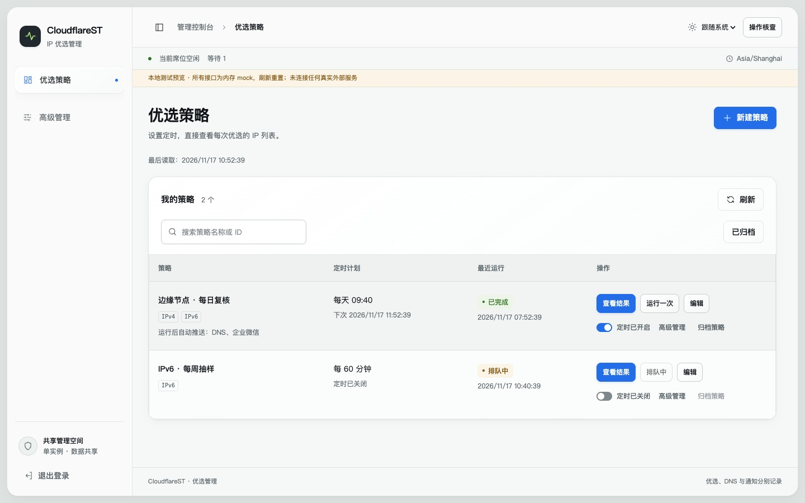
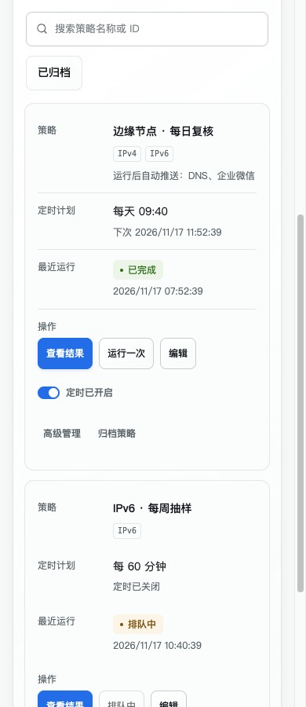

操作直接展示，不再收进“更多”
常用操作保留按钮样式；定时、高级管理和归档直接平铺，用层级和间距整理，而不是增加一次展开操作。
桌面

手机

8 组响应式与深浅色检查、213 项前端测试、自动刷新和简化流程回归、生产构建通过。查看复验说明。
源码和构建资源已更新，运行中的服务尚未替换。未进行其他浏览器或读屏软件实测。
常用操作保留按钮样式；定时、高级管理和归档直接平铺，用层级和间距整理，而不是增加一次展开操作。


8 组响应式与深浅色检查、213 项前端测试、自动刷新和简化流程回归、生产构建通过。查看复验说明。
源码和构建资源已更新，运行中的服务尚未替换。未进行其他浏览器或读屏软件实测。